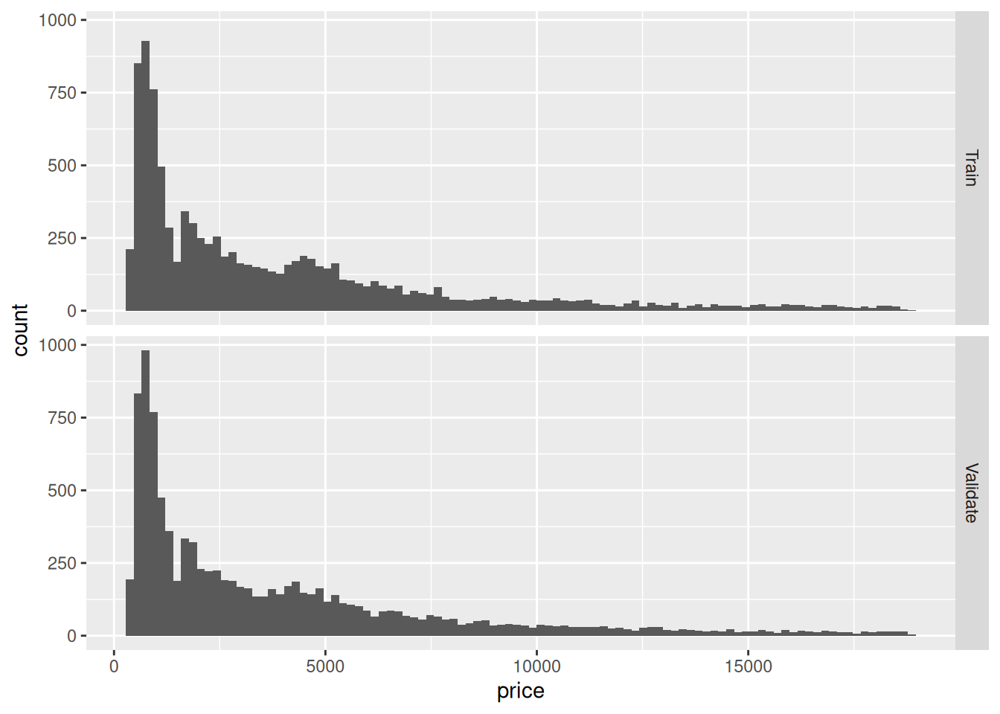
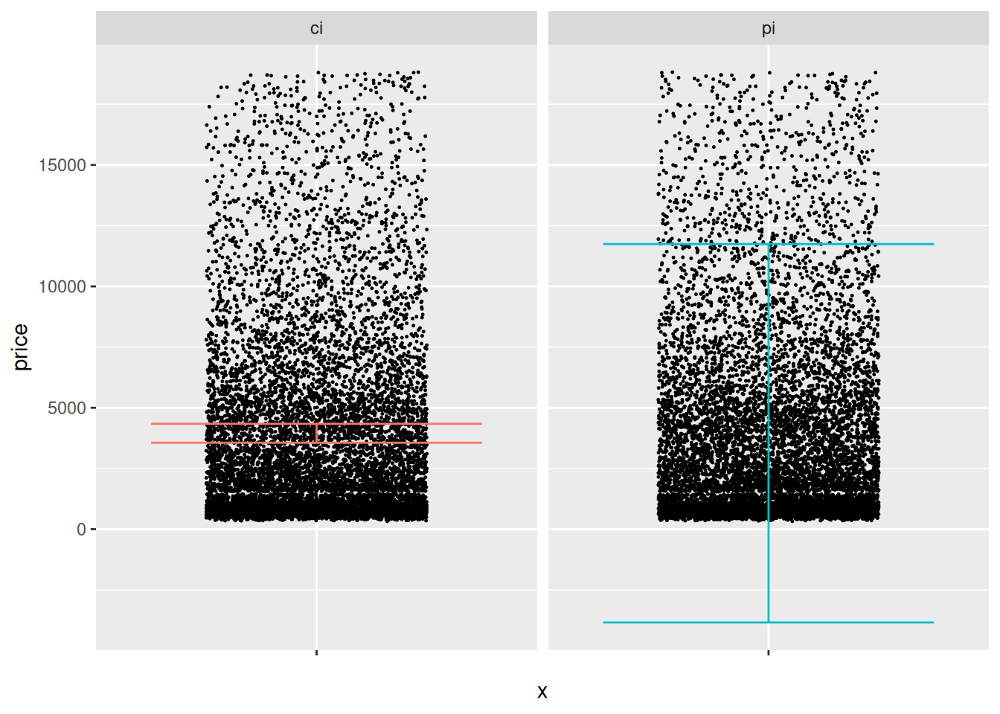

48 Stats: Confidence vs Prediction Intervals
Purpose: There are multiple kinds of statistical intervals, and different intervals are useful for answering different questions. In this exercise, we’ll learn about prediction intervals: How they differ from confidence intervals, and when we would use a CI versus a PI.
Reading: (None, this is the reading)
## ── Attaching core tidyverse packages ──────────────────────── tidyverse 2.0.0 ──
## ✔ dplyr 1.1.4 ✔ readr 2.1.5
## ✔ forcats 1.0.0 ✔ stringr 1.5.1
## ✔ ggplot2 3.5.1 ✔ tibble 3.2.1
## ✔ lubridate 1.9.4 ✔ tidyr 1.3.1
## ✔ purrr 1.0.4
## ── Conflicts ────────────────────────────────────────── tidyverse_conflicts() ──
## ✖ dplyr::filter() masks stats::filter()
## ✖ dplyr::lag() masks stats::lag()
## ℹ Use the conflicted package (<http://conflicted.r-lib.org/>) to force all conflicts to become errors##
## Attaching package: 'broom'
##
## The following object is masked from 'package:modelr':
##
## bootstrap## Helper function to compute uncertainty bounds
add_uncertainties <- function(data, model, prefix = "pred", ...) {
df_fit <-
stats::predict(model, data, ...) %>%
as_tibble() %>%
rename_with(~ str_c(prefix, "_", .))
bind_cols(data, df_fit)
}48.1 Introduction: Confidence vs Prediction Intervals
There are multiple kinds of statistical intervals: We have already discussed confidence intervals (in e-stat06-clt), now we’ll discuss prediction intervals.
48.2 Specific Mathematical Example: Normal Distribution
To help distinguish between between confidence intervals (CI) and prediction intervals (PI), let’s first limit our attention to normal distributions (where the math is easy).
We saw in e-stat06-clt that a confidence interval is a way to summarize our knowledge about an estimated parameter; for instance, a confidence interval \([l, u]\) for the sample mean \(\overline{X}\) of a normal distribution at confidence level \(C\) would be
\[C = \mathbb{P}\left[l < \overline{X} < u\right] = \mathbb{P}\left[\frac{l - \mu}{\sigma / \sqrt{n}} < Z < \frac{u - \mu}{\sigma / \sqrt{n}}\right].\]
Note the \(\sigma / \sqrt{n}\) in the denominator on the right; this is the standard error for the sample mean \(\overline{X}\). A CI is a useful way to summarize our uncertainty about an estimated parameter.
A different kind of interval is a prediction interval (PI). Rather than summarizing information about an estimated parameter, a PI summarizes information about future observations. The following equation defines a prediction interval for a normal distribution assuming we magically know the mean and variance:
\[P = \mathbb{P}\left[l < X < u\right] = \mathbb{P}\left[\frac{l - \mu}{\sigma} < Z < \frac{u - \mu}{\sigma}\right]\] Observations:
- Note that the CI equation above has a dependence on \(n\); as we gather more data the interval will tend to narrow.
- Note that the PI equation above have no dependence on \(n\); when we turn the “magic” off and have to estimate
mean, sdfrom data a dependence on \(n\) shows up. However, even if we had infinite data (recovering the “magic” equation above), the interval would still not collapse to zero width.
48.2.1 q1 Check your understanding
I provide code below to compute a confidence interval for the sample mean when sampling from rnorm(mean = 1, sd = 2) with n = 400. Modify the code to compute a prediction interval for the same underlying normal distribution.
## NOTE: No need to edit this setup
mu <- 1 # Normal mean
sd <- 2 # Normal variance
n <- 400 # Number of samples
ci_lwr <- mu - 1.96 * sd / sqrt(n)
ci_upr <- mu + 1.96 * sd / sqrt(n)
pi_lwr <- mu - 1.96 * sd
pi_upr <- mu + 1.96 * sdUse the following tests to check your work.
## [1] TRUE## [1] TRUE## [1] "Well done!"Our first observation about CI and PI is that PI will tend to be wider than CI! That’s because they are telling us fundamentally different things about our population. Consequently, we use CI and PI for very different applications.
48.3 Applications of CI and PI
A confidence interval is most likely to be useful when we care more about aggregates—rather than the individual observations.
A prediction interval is most likely to be useful when we care more about individual observations—rather than the aggregate behavior.
Let’s think back to e-stat10-hyp-intro, where we were buying many diamonds. In that case we constructed confidence intervals on the mean price of diamonds and on the proportion of high-cut diamonds. Since we cared primarily about the properties of many diamonds, it made sense to use confidence interval to support our decision making.
Now let’s think of a different application: Imagine we were going to purchase just one diamond. In that case we don’t care about the mean price; we care about the single price of the one diamond we’ll ultimately end up buying. In this case, we would be better off constructing a prediction interval for the price of diamonds from the population—this will give us a sense of the range of values we might encounter in our purchase.
Prediction intervals are also used for other applications, such as defining a “standard reference range” for blood tests: Since doctors care about the individual patients—we want every patient to survive, not just mythical “average” patients!—it is more appropriate to use a prediction interval for this application.
Let’s apply these ideas to the diamonds dataset:
## NOTE: No need to edit this setup
# Create a test-validate split
set.seed(101)
diamonds_randomized <-
diamonds %>%
slice(sample(dim(diamonds)[1]))
diamonds_train <-
diamonds_randomized %>%
slice(1:10000)
diamonds_validate <-
diamonds_randomized %>%
slice(10001:20000)We’re about to blindly apply the normal-assuming formulae, but before we do that, let’s quickly inspect our data to see how normal or not they are:
## NOTE: No need to edit this chunk
bind_rows(
diamonds_train %>% mutate(source = "Train"),
diamonds_validate %>% mutate(source = "Validate")
) %>%
ggplot(aes(price)) +
geom_histogram(bins = 100) +
facet_grid(source ~ .) Take a quick look at the plot above, and make a prediction (to yourself) whether the normally-approximated CI and PI will behave well in this case. Then continue on to q2.
48.3.1 q2 Estimate CI and PI
Using the formulas above, estimate CI and PI using diamonds_train. Visualize the results using the chunk q2-vis below, and answer the questions under observations.
df_q2 <-
diamonds_train %>%
summarize(
price_mean = mean(price),
price_sd = sd(price),
price_n = n()
) %>%
mutate(
ci_lwr = price_mean - 1.96 * price_sd / sqrt(n),
ci_upr = price_mean + 1.96 * price_sd / sqrt(n),
pi_lwr = price_mean - 1.96 * price_sd,
pi_upr = price_mean + 1.96 * price_sd
) %>%
select(ci_lwr, ci_upr, pi_lwr, pi_upr)
df_q2## # A tibble: 1 × 4
## ci_lwr ci_upr pi_lwr pi_upr
## <dbl> <dbl> <dbl> <dbl>
## 1 3561. 4340. -3842. 11743.Use the following code to visualize your results; answer the questions below.
## NOTE: No need to edit this chunk
df_q2 %>%
pivot_longer(
names_to = c("type", ".value"),
names_sep = "_",
cols = everything()
) %>%
ggplot() +
geom_point(
data = diamonds_validate,
mapping = aes(x = "", y = price),
position = position_jitter(width = 0.3),
size = 0.2
) +
geom_errorbar(aes(x = "", ymin = lwr, ymax = upr, color = type)) +
guides(color = FALSE) +
facet_grid(~ type)## Warning: The `<scale>` argument of `guides()` cannot be `FALSE`. Use "none" instead as
## of ggplot2 3.3.4.
## This warning is displayed once every 8 hours.
## Call `lifecycle::last_lifecycle_warnings()` to see where this warning was
## generated.
Observations:
- Visually the CI and PI seem decent.
- The CI seems to be located in the “middle” of the data.
- The PI covers a wide fraction of the data. However, its lower bound goes negative, which is undesirable.
- I would check the CI against the population mean (if available) or a validation mean.
- I would check if the PI contains an appropriate fraction of prices, either from the population (if available), or from validation data.
- Both the CI and PI above assume a normal distribution and perfectly-known parameters
mean, sd. The assumption of perfectly-known parameters is probably ok here (since we have a lot of data), but based on EDA we’ve done before, the assumption of normality is quite poor.
48.3.2 q3 Test your intervals
Test whether your CI and PI are constructed correctly: Remember the definitions of what CI and PI are meant to accomplish, and check how closely your intervals agree with the validation data.
## TODO: Devise a test to see if your CI and PI are correctly reflecting
## the diamonds population; use diamonds_validation in your testing
## Testing the CI
bind_cols(
df_q2 %>% select(ci_lwr, ci_upr),
diamonds_validate %>% summarize(price_mean = mean(price))
) %>%
select(ci_lwr, price_mean, ci_upr)## # A tibble: 1 × 3
## ci_lwr price_mean ci_upr
## <dbl> <dbl> <dbl>
## 1 3561. 3917. 4340.## Testing the PI
left_join(
diamonds_validate,
df_q2 %>% select(pi_lwr, pi_upr),
by = character()
) %>%
summarize(P_empirical = mean(pi_lwr <= price & price <= pi_upr))## Warning: Using `by = character()` to perform a cross join was deprecated in dplyr 1.1.0.
## ℹ Please use `cross_join()` instead.
## This warning is displayed once every 8 hours.
## Call `lifecycle::last_lifecycle_warnings()` to see where this warning was
## generated.## # A tibble: 1 × 1
## P_empirical
## <dbl>
## 1 0.935Observations:
- My CI does include the population mean.
- My PI includes ~0.94 of the validation prices, which is quite close to the 0.95 desired.